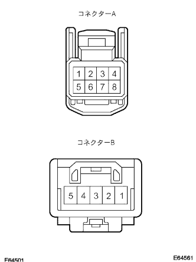

ボイスコマンドスイッチ 単体点検 |
| 1. ボイスコマンドスイッチ点検 |
|  |
導通点検
SST(トヨタエレクトリカルテスター)を使用して、音声認識スイッチを操作したときの、ボイスコマンドスイッチのコネクター各端子間の導通を点検する。
| 切り替え | テスター接続 | 導通 |
|---|---|---|
| 音声認識スイッチ押下せず | A1←→A8 | なし |
| 音声認識スイッチ押下 | A1←→A8 | あり |
SST(トヨタエレクトリカルテスター)を使用して、ナビゲーションコンピュータ←→テレホンマイクロホンASSY間ボイスコマンドスイッチの導通を点検する。
| テスター接続 (ナビゲーションコンピュータ側←→テレホンマイクロホンASSY側) | 基準 |
|---|---|
| MIC+(A3)←→MIC+(A4） | 導通あり |
| MIC-(A5)←→MIC-(B2) | 導通あり |
| MACC(A4)←→MACC(B5） | 導通あり |
SST(トヨタエレクトリカルテスター)を使用して、ボイスコマンドスイッチのコネクターA各端子間の導通を点検する。
| テスター接続 | 基準 |
|---|---|
| SW-(A1)←→MIC-(A5)←→SGND(A6)←→SNSE(A7) | 導通あり |